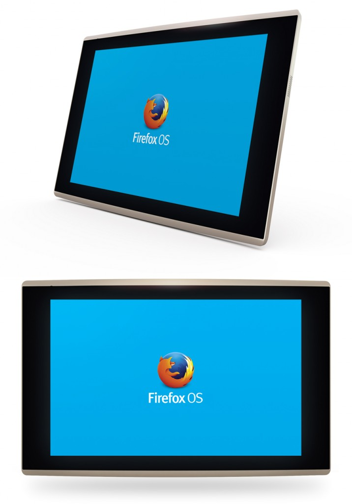

Mozilla 才在 1 月發表平板電腦的 Contribution Program，希望加速開發 Firefox OS 的平板電腦版本。我們很高興能接著啟動硬體申請方案。全世界的 Mozillian 只要來這裡申請，就能對Firefox OS 的測試、本地化、產品規劃、程式碼撰寫等作業做出貢獻。
本方案的第一款裝置，是由鴻海科技集團 (Foxconn) 所提供的「InFocus」─ 10 吋平板電腦，搭載1.0GHz 四核心 Cortex-A7 處理器。

型號：Foxconn InFocus
處理器：A31 (ARM Cortex A7) 四核心 1.0GHz，內含 PowerVR SGX544MP2 GPU
RAM：2GB
儲存容量：16GB
螢幕：10.1 吋 IPS 電容多點觸控 @ 1280×800
相機：前/後鏡頭各為 2MP/5MP 像素
Wireless：802.11b/g/n
通訊埠：Micro SD、Micro USB、headphone
其他：GPS、Bluetooth、Gyroscope
電池容量：7000mAh
我們也很高興有新的生力軍加入此方案：由威盛電子 (VIA) 提供的「Vixen」─ 7 吋平板電腦，搭載1.2Ghz 雙核心 Cortex-A9 處理器。

型號：VIA Vixen
處理器：WM8880 (ARM Cortex A9) 雙核心 1.2Ghz，內含雙核心Mali 400 GPU
RAM：1GB
儲存容量：8GB
螢幕：7 吋電容式多點觸控 @ 1024×600
相機：前/後鏡頭各為 0.3MP/2.0MP 像素
Wireless：802.11b/g/n
通訊埠：Micro SD、Micro USB、Mini HDMI、耳機埠
其他：Bluetooth、Accelerometer
電池容量：4000mAh
由於這些開發裝置數量有限，Mozilla 希望能確實提供給熱血的貢獻者所用，以進行完整測試並回報瑕疵；比較他牌平板電腦，找出並記錄所缺的功能；翻譯使用者介面 (UI)；列出開發作業的優先順序與後續方向；深入了解現有功能並修正錯誤；定義新的功能與使用經驗；及其他更多規劃。
如果你對本方案躍躍欲試，而你也有時間、有技術能滿足 Mozilla 的需求，更想在平板電腦領域闖出一片天，就立刻申請免費的開發用平板電腦吧。
原文連結：Applications Open for Expanded Tablet Contribution Program